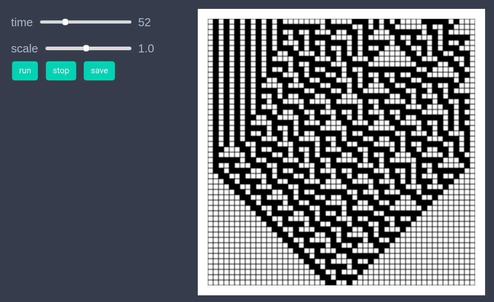
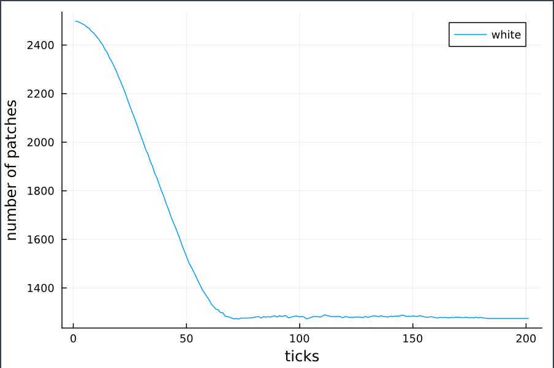

Elementary cellular automaton
using EasyABMStep 1: Create Model
In this model, we work with patches only. We set grid_size to (50,50) and set space_type to NPeriodic.
model = create_2d_model(size = (50,50), space_type=NPeriodic)Step 2: Initialise the model
We assign two attributes namely color and val to all patches. The patches with val 0 are white while those with val 1 are black. Initially, we set all patches to have val = 0, color = cl"white" except for the patch at position (25,1) which is assigned val = 1, color = cl"black". Since, the color and val attributes are not independent, we tell EasyABM to record only color attribute of the patches through the argument props_to_record to the init_model! function.
function initialiser!(model)
for j in 1:model.size[2]
for i in 1:model.size[1]
model.patches[i,j].color = cl"white"
model.patches[i,j].val = 0
end
end
model.patches[25,1].color = cl"black"
model.patches[25,1].val = 1
end
init_model!(model, initialiser = initialiser!, props_to_record = Dict("patches" => Set([:color]))) Step 3: Defining the step_rule! and running the model
The dictionary rules defines the update rule. It is known as rule number 30 in the classification of elementary cellular automata. The val property (and hence the color) of jth patch in (i+1)th row is set equal to the value in rules corresponding to the key (a, b, c) where in the ith row a is val of (j-1)th patch, b is val of jth patch and c is the val of (j+1)th patch. Since the size of our space is finite, after a certain number of iterations we have to copy each row to the row below and update the topmost row.
rules = Dict((1,1,1)=>0, (1,1,0)=>0, (1,0,1)=>0, (0,1,1)=>1,
(1,0,0)=>1, (0,1,0)=>1, (0,0,1)=>1, (0,0,0)=>0) # rule 30
function update_from_row_below(row, model)
for j in 2:(model.size[1]-1)
vals = (model.patches[j-1, row-1].val,
model.patches[j, row-1].val,
model.patches[j+1, row-1].val)
val = rules[vals]
model.patches[j, row].val = val
model.patches[j, row].color = val==0 ? cl"white" : cl"black"
end
end
function copy_to_row_below(row, model)
for j in 1:model.size[1]
model.patches[j, row-1].val = model.patches[j, row].val
model.patches[j, row-1].color = model.patches[j, row].color
end
end
function step_rule!(model)
if model.tick < model.size[1]
row = model.tick+1
update_from_row_below(row, model)
else
for i in 2:model.size[1]
copy_to_row_below(i, model)
end
update_from_row_below(model.size[1], model)
end
endrunmodel!(model, steps = 200, steprule = step_rule!)
Step 4: Visualisation
In order to draw the model at a specific frame, say 4th, one can use draw_frame(model, frame = 4 ). If one wants to see the animation of the model run, it can be done as
animate_sim(model)
Step 5: Fetch Data
It is easy to fetch any recorded data after running the model. For example, the numbers of patches with color cl"white" can be got as follows
df = get_nums_patches(model,
patch-> patch.color == cl"white",
labels=["white"], plot_result=true)
References
https://en.wikipedia.org/wiki/Elementarycellularautomaton